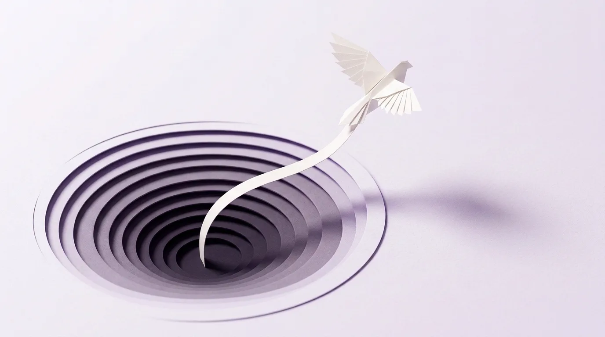

Bermain video game berjam-jam bukan berarti otak langsung mengalami adiksi kimiawi seperti ketergantungan zat narkotika, melainkan sering kali merupakan kompulsi perilaku yang tumbuh untuk menambal kekosongan validasi, kendali, atau koneksi di hidup nyata. Karena itu, memaksa berhenti total atau sekadar menyalahkan gamenya hampir selalu berujung kambuh, sedangkan pemulihan sejati dimulai dari memetakan kebutuhan psikologis yang terabaikan dan membangun kepentingan tandingan di dunia nyata.
Kebingungan ini berulang di banyak ruang keluarga dan kamar mahasiswa. Seseorang yang bermain setiap malam seusai kerja langsung dicap "kecanduan" meski tidur, pekerjaan, dan relasinya sehat. Di kutub berlawanan, sebagian pemain melihat jam tidurnya rusak, nilai kuliah jatuh, dan ajakan berkumpul ditolak berulang kali, tetapi tetap menyangkal masalahnya karena merasa sanggup berhenti kapan saja.
Salah membaca batas antara hobi intens dan kompulsi membawa ongkos nyata. Sitaan paksa mendorong konflik rumah tangga, label "otak rusak" mematikan harapan pulih, dan penyangkalan membiarkan tahun demi tahun tergerus. Pada 2011, Extra Credits lewat James Portnow dan Daniel Floyd membedah tema ini dalam Game Addiction - I: Myths About Gaming's Impact on Health serta monolog jujur James pada Game Addiction - II: How to Defeat Game Compulsion. Di sini kita mempertemukan kedua video itu dengan kriteria klinis WHO ICD-11, APA DSM-5, dan riset Universitas Oxford agar kamu bisa menilai posisimu secara objektif lalu menyusun langkah pulih yang realistis.
Kenapa Kepanikan Media Soal Kecanduan Game Sering Meleset dari Akar Masalah
Setiap medium hiburan baru hampir selalu disambut kepanikan moral sebelum riset tenang selesai berbicara. Radio, komik, dan televisi pernah dituding merusak generasi muda. Ketika giliran video game naik ke panggung utama, berita sensasional yang menyamakan konsol dengan narkotika jauh lebih laku daripada ulasan tentang kesepian atau tekanan hidup di rumah.
Pola ini mirip dengan narasi kepanikan publik terhadap teknologi baru yang menutupi mekanisme sebenarnya di balik layar. Video 1 Extra Credits mengambil posisi seimbang yang langka: media arus utama keliru saat mencari kambing hitam, tetapi komunitas pemain juga keliru bila bersikap defensif dan menyangkal bahwa pola bermain berlebihan memang bisa merusak hidup sebagian orang.
Bedanya Adiksi Kimiawi dan Kompulsi Perilaku yang Sering Dicampuradukkan
Kekeliruan utama berawal dari menyamakan adiksi kimiawi (chemical addiction) dengan kompulsi perilaku (behavioral compulsion). Pada adiksi kimiawi seperti nikotin, alkohol berat, atau opioid, zat asing masuk ke aliran darah dan secara fisik mengubah kimia otak. Begitu asupan diputus mendadak, tubuh mengalami putus zat fisik (withdrawal) berupa gemetar, mual, lonjakan tekanan darah, sampai kegawatan medis.
Kompulsi bermain bekerja lewat jalur berbeda. Tidak ada senyawa kimia yang disuntikkan dari layar ke pembuluh darah. Pola bermain yang sulit direm itu tumbuh karena perilaku berulang tersebut rutin meredam stres, bosan, atau rasa tidak berdaya. Extra Credits menekankan bahwa mencampuradukkan keduanya membuat solusi meleset: orang sibuk memusuhi gimnya sambil membiarkan luka psikologis di baliknya tetap menganga.
Bayangkan bedanya seperti mesin kendaraan yang salurannya dimodifikasi khusus untuk satu pelarut kimia dibanding seseorang yang terus mengunci diri di ruang tunggu berpendingin udara setiap kali rumahnya gaduh dan penuh tekanan. Mesin tadi mogok secara fisik saat pelarutnya dihentikan. Ruang tunggu itu tidak meracuni tubuh, tetapi kebiasaan bersembunyi di dalamnya mengeras karena udara dingin di sana terasa jauh lebih aman daripada kekacauan di luar pintu.
Batas analogi ruang tunggu ini wajib dicatat secara sadar: ruang tunggu bersifat pasif, sedangkan banyak video game modern dirancang aktif dengan misi harian, bonus masuk beruntun, dan efek kemenangan cepat untuk menahan perhatian pemain selama mungkin. Walau bukan zat kimia, desain imbalannya tetap mempersempit jarak antara hiburan biasa dan kompulsi saat kondisi mental pemain sedang rapuh.
Saat Layar Dijadikan Pengasuh Tanpa Pendampingan Lingkungan
Video 1 Extra Credits juga menyoroti kebiasaan rumah tangga yang jarang diakui. Ketika seorang anak duduk delapan jam di depan layar hingga lupa belajar dan makan, media segera menuding gim yang ia mainkan. Sedikit sekali yang bertanya: di mana kehadiran orang dewasa selama delapan jam itu berlangsung?
Di banyak rumah yang lelah oleh tekanan kerja, layar diam-diam beralih fungsi menjadi "pengasuh pengganti" yang senyap. Selama anak diam bersama perangkatnya, rumah terasa tenang. Namun, saat layar menggantikan percakapan, bimbingan emosi, dan kegiatan fisik bertahun-tahun, dunia virtual menjadi satu-satunya ruang yang terasa ramah baginya.
Menyalahkan perangkat permainan dalam situasi seperti itu ibarat memecahkan termometer saat badan panas. Konsol bisa disita malam ini, tetapi kekosongan relasi di rumah tidak hilang. Tanpa kehadiran nyata dari orang terdekat, pola pelarian hanya berpindah ke layar lain.
Peta Ilmiah Setelah 2011 dari Kriteria WHO, DSM-5, hingga Riset Oxford
Dua episode Extra Credits tersebut tayang pada 2011, saat belum ada manual klinis internasional yang mengakui gangguan bermain gim. Supaya sudut pandang kita tidak berhenti lima belas tahun lalu, kita perlu memeriksa konsensus medis yang terbit sesudahnya.
Hasilnya menarik. Ilmu kedokteran jiwa antara 2013 sampai 2022 mengakui bahwa pada sebagian kecil orang, hilangnya kendali atas bermain memang bisa mencapai taraf gangguan klinis. Di saat bersamaan, riset populasi besar membuktikan mayoritas pemain berdurasi lama tetap sehat dan tidak memenuhi syarat gangguan tersebut.
Batas Ketat Kriteria Klinis WHO ICD-11 dan Risiko Salah Label pada Hobi Intens
Tonggak pertama muncul dari American Psychiatric Association (APA) lewat DSM-5 (2013). APA menempatkan Internet Gaming Disorder (IGD) di Section III (Conditions for Further Study), yakni kategori yang masih memerlukan penelitian lanjutan, dengan sembilan kriteria dan ambang minimal lima kriteria selama dua belas bulan.
Enam tahun kemudian, Organisasi Kesehatan Dunia (WHO) meresmikan Gaming Disorder dalam ICD-11 kode 6C51 (diadopsi 2019, berlaku global 2022). WHO memasang tiga syarat ketat yang harus bertahan minimal 12 bulan:
- Kendali atas bermain terganggu (impaired control): Pemain tidak sanggup mengatur waktu mulai, frekuensi, intensitas, maupun kapan harus berhenti.
- Prioritas bermain mengalahkan hidup harian: Bermain mengambil urutan teratas di atas minat lama, istirahat, dan kewajiban sehari-hari.
- Berlanjut atau meningkat walau kerusakan nyata terjadi: Kebiasaan tidak berhenti meski sudah merusak keluarga, pendidikan, atau pekerjaan.
Satu catatan krusial: WHO tidak menggunakan jumlah jam bermain sebagai syarat tunggal. Dua orang bisa sama-sama bermain empat jam tiap malam, tetapi yang satu tetap tidur teratur dan produktif, sedangkan yang lain terancam putus kuliah. Menyamakan keduanya menghasilkan false positive (salah diagnosis pada hobi sehat).
Risiko salah label itu dibuktikan studi Universitas Oxford oleh Andrew K. Przybylski, Netta Weinstein, dan Kou Murayama di American Journal of Psychiatry (2017) terhadap 18.932 responden. Lebih dari dua pertiga pemain tidak menunjukkan gejala bermasalah, dan prevalensi ketat yang benar-benar memenuhi ambang gangguan klinis hanya sekitar 0,3 persen hingga 1,0 persen populasi umum. Banyak kasus yang buru-buru dicap kecanduan sejatinya adalah keterlibatan hobi tinggi (high engagement) atau kompulsi pelarian.
Tiga Kebutuhan Psikologis Dasar yang Diam-Diam Dipenuhi Dunia Virtual
Bila bukan adiksi zat kimia, apa yang membuat seseorang sanggup duduk sepuluh jam menatap layar? Jawaban paling kuat datang dari Self-Determination Theory (SDT) yang diteliti Richard M. Ryan, C. Scott Rigby, dan Andrew Przybylski dalam jurnal Motivation and Emotion (2006).
Manusia membutuhkan tiga nutrisi psikologis dasar, dan video game memasok ketiganya dengan presisi tinggi:
- Otonomi (Autonomy): Rasa memegang kendali atas pilihan sendiri. Saat sekolah atau pekerjaan penuh aturan kaku, gim menawarkan kebebasan memilih peran, strategi, dan tempo.
- Kompetensi (Competence): Rasa mampu menaklukkan tantangan yang terus meningkat. Kurva kesulitan gim memberi bukti terukur bahwa latihan langsung membuahkan kemajuan.
- Keterhubungan (Relatedness): Rasa diterima dan dibutuhkan oleh orang lain. Di dalam guild atau tim daring, kehadiran pemain dinantikan dan kontribusinya diakui.
Batas pembedanya tajam. Ketika otonomi, kompetensi, dan keterhubungan terpenuhi di dunia nyata, gim bekerja sebagai hiburan sehat. Begitu ketiga kebutuhan itu macet parah di luar layar (need frustration), gim bergeser menjadi katup pelarian kompulsif.
Jebakan Defisit Validasi yang Membuat Dunia Game Terasa Lebih Adil daripada Hidup Nyata
Di episode kedua, Game Addiction - II: How to Defeat Game Compulsion (Agustus 2011), James Portnow menanggalkan gaya animasi cepat kanal tersebut dan berbicara apa adanya tentang pengalamannya sendiri terjerat MMORPG. Berdasarkan kesaksian langsung James, pola kompulsifnya berawal dari Ultima Online saat SMA lalu memuncak pada EverQuest di bangku kuliah.
Kerugiannya bukan teori. James mengorbankan jam tidur, meninggalkan aktivitas teater yang dulu ia cintai, mengabaikan peringatan academic probation dari kampus, serta menjauh dari relasi dunia nyata. Ia mengetahui dampaknya, tetapi tetap kembali membuka layar setiap hari.
James menyebut pendorong utamanya sebagai defisit validasi (validation deficit). Dunia gim memberi imbalan cepat, terukur, dan adil bagi ketekunan. Sebaliknya, sekolah, kantor, atau pergaulan nyata sering terasa lambat, kabur, dan abai terhadap kerja keras. Mekanisme haus pengakuan terukur ini sebangun dengan jebakan mengejar angka pengakuan semu demi validasi dalam urusan status finansial. Bedanya, papan skor di sini berbentuk level karakter dan peringkat musiman.
Inti Kesaksian James Portnow: Kompulsi bermain jarang muncul karena cinta berlebih pada gimnya. Pola itu lebih sering tumbuh karena hidup nyata terasa sepi validasi. Mengutuk permainannya tanpa membenahi kekosongan di luar layar hanya menunda kambuh berikutnya.
Kenapa Berhenti Total Justru Rawan Memicu Kambuh yang Lebih Berat
Saat tersadar jam bermain sudah kelewatan, reaksi spontan banyak orang adalah berhenti total (cold turkey): menghapus semua gim dan menjual akun dalam semalam. Langkah itu terlihat gagah, tetapi James memperingatkan bahwa berhenti total dalam ruang hampa sangat rawan memicu kambuh (relapse) yang lebih dalam.
Mekanismenya mirip menyita tongkat penyangga dari orang yang pergelangan kakinya terkilir tanpa memberinya latihan penguatan. Selama duduk diam, ia tampak sanggup bertahan. Begitu harus berdiri menopang berat badan sendiri, rasa nyeri pertama langsung memaksanya meraih tongkat tadi lebih erat.
Batas analogi tongkat penyangga ini wajib disadari: tongkat medis membantu pemulihan jika dipakai sementara, sedangkan kompulsi bermain justru mengikis daya tahan terhadap kebosanan dan keterampilan sosial bila berlangsung bertahun-tahun. Namun, logika transisinya serupa. Mencabut pelarian tanpa menyiapkan pengganti meninggalkan ruang kosong yang menyiksa. Saat stres kerja, nilai buruk, atau kesepian datang, otak segera mencari katup pereda paling akrab lalu memasang ulang gim yang sama.
Tekanan Sosial Teman Bermain dan Jebakan Pikiran Hidup Terlanjur Tertinggal
James Portnow juga menyoroti dua hambatan sunyi yang kerap menjatuhkan niat pulih. Pertama, tekanan dari lingkaran bermain lama yang ia sebut dengan ungkapan keras: "second junkies push junk." Teman daring jarang bermaksud buruk; mereka hanya merindukan rekan satu timnya. Namun, ajakan raid larut malam dan candaan bahwa kamu "sudah berubah" tetap bekerja menarikmu mundur. Karena itu, membatasi kontak sementara dengan grup bermain lama sering kali tak terelakkan.
Hambatan kedua tinggal di kepala sendiri: rasa malu dan pikiran bahwa hidup sudah terlanjur rusak. Menoleh ke belakang dan melihat beberapa tahun habis di layar sementara teman sebaya sudah lulus atau mapan memunculkan bisikan mematikan: "Sudah terlambat, buat apa mulai sekarang?" Ironisnya, rasa malu itulah yang paling sering mendorong seseorang kembali ke layar demi membungkam penyesalan.
Pesan penutup James layak dipegang erat: tahun-tahun yang terlewat tidak pernah membatalkan hakmu untuk memulai ulang. Hidup nyata selalu membuka pintu bagi siapa pun yang memilih melangkah hari ini.
Memetakan Posisi Dirimu antara Hobi Sehat, Kompulsi Pelarian, dan Indikasi Klinis
Gunakan matriks triase tiga zona berikut untuk menilai kondisimu selama enam hingga dua belas bulan terakhir secara jujur, tanpa menyangkal dampak nyata maupun panik melabeli hobi sehat.
| Parameter | Zona 1: Hobi Intens Sehat | Zona 2: Kompulsi Pelarian | Zona 3: Indikasi Klinis (WHO ICD-11 6C51) | Keputusan Tegas |
|---|---|---|---|---|
| Motif Utama Bermain | Rekreasi sadar, menikmati cerita, strategi, atau santai bersama teman. | Meredam stres, bosan, malu, atau defisit validasi di hidup nyata. | Dorongan otomatis tanpa kenikmatan utuh; bermain demi menghindari gelisah. | Jika motif bergeser menjadi pelarian rutin, segera ubah pola sebelum mengeras. |
| Kendali Waktu & Berhenti | Sanggup berhenti sesuai jadwal tanpa marah atau rasa hampa berat. | Sering molor melewati batas niat, terutama larut malam saat lelah. | Gagal berulang kali saat mengurangi atau berhenti minimal 12 bulan. | Jangan andalkan niat semata; ubah lingkungan atau cari pendampingan. |
| Dampak pada Fungsi Hidup | Tidur, kesehatan, studi atau kerja, dan relasi dekat tetap terjaga. | Tidur tergerus, performa naik-turun, dan mulai menghindari agenda sosial nyata. | Kerusakan nyata dan menetap pada studi, karier, keuangan, atau keluarga. | Begitu fungsi hidup terkorbankan, statusnya bukan lagi sekadar hobi. |
| Sikap Saat Dibatasi | Terbuka berdiskusi dan sanggup beralih ke aktivitas lain tanpa drama. | Defensif, merasa disalahpahami, atau menyembunyikan lama bermain. | Ledakan emosi berat, putus relasi, atau abai pada peringatan kampus dan kantor. | Hentikan debat menyalahkan gim; audit sumber stres yang sedang dihindari. |
| Rasa Setelah Sesi Usai | Segar, puas, dan siap menjalani hari esok. | Hampa, bersalah, atau menyesali waktu tepat saat layar mati. | Rasa malu yang dalam justru memicu dorongan membuka layar lagi. | Zona 1 dijaga ritmenya; Zona 2 butuh kepentingan tandingan; Zona 3 wajib ke profesional. |
Posisi dalam membaca tabel ini tegas. Jika kamu berada di Zona 1, jangan biarkan stigma media merampas hobi sehatmu. Namun, bila kamu berdiri di Zona 2, berhenti menunda perbaikan dengan janji "bulan depan aku kurangi sendiri", sebab kompulsi pelarian hampir tidak pernah mengecil tanpa pengisi baru di dunia nyata.
Kapan Upaya Mandiri Tidak Lagi Cukup dan Bantuan Profesional Wajib Dicari
Strategi kebiasaan mandiri memiliki batas daya kerja. Pengaturan jadwal seorang diri tidak lagi memadai ketika kamu sudah menyentuh Zona 3: kendali hilang berbulan-bulan sampai setahun penuh, terancam putus kuliah atau kehilangan pekerjaan, timbul utang demi pembelian dalam gim, atau relasi keluarga retak parah.
Konsultasi dengan psikolog klinis atau psikiater juga wajib didahulukan jika pola bermain berjalan bersama depresi menetap, kecemasan sosial berat, gangguan tidur kronis, atau pikiran menyakiti diri. Dalam banyak kasus klinis, bermain berlebihan hanyalah gejala permukaan dari kondisi penyerta yang membutuhkan evaluasi medis dan terapi terstruktur seperti terapi perilaku kognitif. Mencari tenaga profesional bukan tanda kalah, melainkan keputusan dewasa saat beban terlalu berat dipanggul sendirian.
Membangun Kepentingan Tandingan dan Memulai Lima Belas Menit Pertama di Luar Layar
Titik balik James Portnow keluar dari EverQuest tidak lahir dari perang tekad sendirian. Dalam Video 2, ia mengisahkan bahwa tarikan layar mulai melonggar setelah muncul kepentingan tandingan (competing interests) yang nyata: kedekatan emosional dengan seseorang di dunia nyata dan kembalinya ia ke dunia teater. Begitu hidup di luar layar kembali memberi alasan untuk hadir, daya tarik gim menyusut alami.

Selaras dengan Self-Determination Theory, tanam sumber baru bagi otonomi, kompetensi, dan keterhubungan lewat empat langkah terukur:
- Audit Pemicu Sebelum Menghapus Gim: Tulis jujur di kertas apa yang paling sering mendorongmu membuka gim pekan ini, entah sepi sepulang kerja, tugas yang buntu, atau haus rasa menang kecil.
- Pilih Satu Kepentingan Tandingan yang Melatih Kompetensi: Ambil satu kegiatan luar layar dengan kemajuan nyata seperti olahraga rutin, musik, memasak, menulis, atau klub lokal yang membuatmu penasaran, bukan terasa seperti hukuman.
- Jadwalkan Koneksi Manusia di Dunia Fisik: Kompulsi subur dalam isolasi. Buat janji rutin tatap muka bersama keluarga atau teman dekat yang tidak menarikmu kembali ke jadwal grinding.
- Pasang Gesekan Lingkungan dan Jaga Tidur: Jauhkan perangkat bermain dari ranjang, senyapkan notifikasi grup gim saat malam, dan beri tahu satu orang dekat tentang batas waktumu.
Jangan tunggu hari Senin. Gunakan lima belas menit pertama selepas membaca tulisan ini: tutup tab forum atau berita gim yang terbuka, tulis satu kalimat jujur mengenai kebutuhan psikologis apa yang paling kering di hidup nyatamu bulan ini, lalu kirim satu pesan singkat ke seorang teman atau anggota keluarga untuk bertemu pekan ini. Kendali hidup tidak kembali lewat satu sumpah besar, melainkan lewat keberanian hadir kembali di ruangan yang sama bersama manusia nyata.
Referensi
- Extra Credits. (2011, Juli). Game Addiction - I: Myths About Gaming's Impact on Health [Video]. YouTube. https://www.youtube.com/watch?v=Y5RSngCFpsc
- Extra Credits. (2011, Agustus). Game Addiction - II: How to Defeat Game Compulsion [Video]. YouTube. https://www.youtube.com/watch?v=V_qlumZ5K4I
- World Health Organization. Addictive Behaviours: Gaming Disorder (ICD-11 6C51). https://www.who.int/news-room/questions-and-answers/item/addictive-behaviours-gaming-disorder
- American Psychiatric Association. Internet Gaming (DSM-5 Section III). https://www.psychiatry.org/patients-families/internet-gaming
- Ryan, R. M., Rigby, C. S., & Przybylski, A. (2006). The Motivational Pull of Video Games: A Self-Determination Theory Approach. Motivation and Emotion, 30(4), 344-360. https://doi.org/10.1007/s11031-006-9051-8
- Przybylski, A. K., Weinstein, N., & Murayama, K. (2017). Internet Gaming Disorder: Investigating the Clinical Relevance of a New Phenomenon. American Journal of Psychiatry, 174(3), 230-236. https://doi.org/10.1176/appi.ajp.2016.16020224